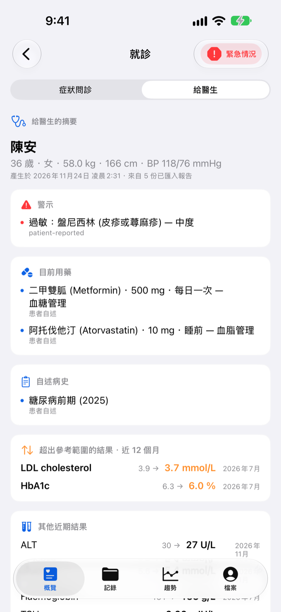

匯入並核對報告
- 開啟記錄頁面並點一下 +，可透過相機掃描、選取照片、從「檔案」匯入 PDF/圖片或手動新增筆記。
- 核對辨識出的項目，點一下待確認項即可放大檢視對應的原圖位置並依需求修改。
- 確認後儲存。多科別健檢報告會整理為一個關聯群組，並將總檢結論置頂顯示。
檢視截圖：瀏覽醫療記錄

概覽與趨勢追蹤
- 在概覽頁可快速檢視近期關鍵指標、目前用藥、過敏警示、待接種提醒及 Apple 健康摘要。
- 在趨勢頁可跨醫院對比同一指標的歷史變化；Med-X 會自動換算為你偏好的單位，並於曲線後方標註各份報告自帶的參考範圍。
- 需要表格備份時，可在趨勢頁右上角匯出資料表格。
檢視截圖：檢視檢驗趨勢與參考範圍

準備就診與「給醫生」摘要
- 在概覽頁點一下準備就診。
- 在症狀記錄中依引導梳理主要不適，並提前寫下想向醫師確認的問題；若出現緊急警示訊號，App 會立即提示當地急救電話。
- 切換至給醫生分頁檢視清晰的一頁交接摘要，可直接全螢幕手持給醫師看，或匯出列印為 PDF。
檢視截圖：準備就診與醫師摘要


家庭成員、用藥與疫苗
- 點一下左上角成員切換按鈕即可新增或切換家庭成員，每位成員的資料相互獨立。
- 在檔案頁填寫過敏史、基礎體徵、既往診斷及重要安全資訊。
- 在用藥中維護在用藥品，新增時若存在重複成分會自動提示。
- 在疫苗接種中拍攝接種卡或手動記錄劑次，並檢視常規接種建議。
Apple Intelligence 與本機學習
- 於支援的裝置上，可前往設定 › Apple Intelligence開啟或關閉輔助整理與病史摘要功能。
- 在設定 › 端側學習中，可選擇是否從你確認過的報告中學習版式與指標別名，也可隨時點一下忘記所有學習內容重置。
Apple 健康、Face ID 與刪除資料
- 在設定 › Apple 健康中可為裝置擁有者開啟唯讀健康彙總；Med-X 不會向 Apple 健康寫入資料。
- 在設定中開啟需要 Face ID 後，離開 App 將自動鎖定。
- 刪除的記錄會先進入回收桶方便復原；如需徹底清空，可在設定中使用重設所有資料。
日誌與意見回饋
- 前往設定 › 關於 › 日誌與意見回饋，可直接開啟郵件向 contact@yhxue.com 回報問題或提供建議。
- 寄出前可自由選擇是否附帶去識別化 .mtxt 診斷日誌與基礎裝置資訊，並可先預覽日誌全文確認不含個人醫療內容。
- 你也可以隨時單獨匯出或清除本機診斷日誌。
常見問題
使用 Med-X 需要連線嗎？ 不需要。掃描報告、檢視趨勢、產生就診摘要與管理家庭成員皆可離線於裝置完成。
Med-X 會提供醫療診斷嗎？ 不會。Med-X 僅協助你整理自己的醫療資料，請始終對照原始報告核對數字，並向專業醫師諮詢診療意見。
.mtxt 診斷日誌裡有什麼？ 僅包含最近 7 天的去識別化運作事件、耗時與錯誤代碼，不包含姓名、檢驗數值、診斷、藥品、備註或辨識出的報告文字。
如何取得協助？ 在「設定 › 關於 › 日誌與意見回饋」中寄出，或來信至 contact@yhxue.com。